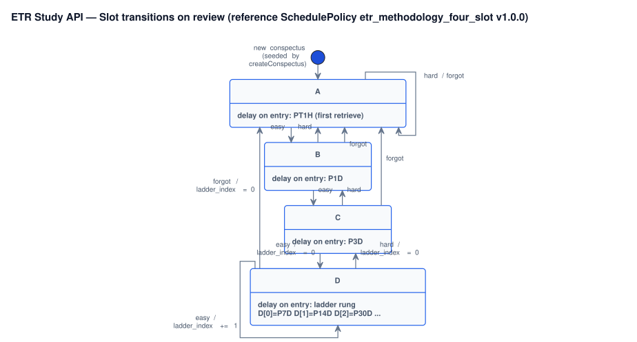

Spec · API · Conspectus Draft
POST /api/v1/conspectuses/{conspectus_uuid}/actions/review
Metadata
Overview
Apply one retrieve outcome to a conspectus. The learner has tried to recall the note (cover → rewrite → speak per methodology · retrieve) and tags the attempt easy · hard · forgot. The server advances the slot ladder per the active SchedulePolicy, recomputes next_review_at, and writes an immutable review-log row.
§1Business context
Spaced retrieval is the load-bearing mechanism in the ETR methodology: durable memory comes from effortful recall on a schedule, not from re-reading. The learner needs one obvious action — “I just recalled this; here is how it went” — that updates when the same conspectus should surface next.
This endpoint is the only sanctioned way to mutate conspectus_schedules. It guarantees three product invariants: (a) every retrieval outcome lands in an append-only log (conspectus_review_logs) with full before/after snapshots; (b) slot transitions are deterministic for a given (SchedulePolicy version, current slot, tag); (c) two concurrent reviews on the same conspectus cannot both silently win.
§2User stories
- US-CONSP-REVIEW-1. As a learner, I want to record one retrieval outcome (easy / hard / forgot), so that future due-lists reflect my current performance instead of a fixed calendar.
- US-CONSP-REVIEW-2. As an integrator, I want each review to advance the schedule deterministically and idempotently, so that retries during flaky network conditions cannot double-advance the ladder.
- US-CONSP-REVIEW-3. As a product owner, I want every review auditable with before/after schedule snapshots and the policy version used, so that I can investigate retention regressions after a policy change.
§3Acceptance criteria · Given / When / Then
| ID & scenario | Given | When | Then |
|---|---|---|---|
| AC-CONSP-REVIEW-001 · Happy path — easy from A | A conspectus owned by user U with slot = A. | A review request arrives with tag = easy and a fresh Idempotency-Key. | 200 OK; slot = B; next_review_at set per active policy delay; schedule_revision incremented by 1. |
| AC-CONSP-REVIEW-002 · Happy path — forgot from D | Conspectus with slot = D and slot_d_ladder_index = 2. | Review with tag = forgot. | 200 OK; slot = A; slot_d_ladder_index = 0; schedule_revision incremented. |
| AC-CONSP-REVIEW-003 · Idempotent replay | A previously successful review with key K and identical body exists in idempotency_keys. | The same request is replayed within the idempotency TTL. | The original 200 OK body is returned byte-for-byte; schedule unchanged; no new conspectus_review_logs row. |
| AC-CONSP-REVIEW-004 · Idempotency-key conflict | Key K previously used with payload P1. | The same key is sent with payload P2. | 409 COMMON_409 (IDEMPOTENCY_KEY_REUSED_WITH_DIFFERENT_PAYLOAD); no DB write. |
| AC-CONSP-REVIEW-005 · Missing idempotency-key | Request without an Idempotency-Key header. | The handler runs validation. | 400 COMMON_400 (IDEMPOTENCY_KEY_REQUIRED); no DB write; warn-level log. |
| AC-CONSP-REVIEW-006 · Wrong owner | Conspectus C owned by user U1. | Review request resolves to user U2. | 404 CONS_404 — not 403; we do not leak existence to non-owners. |
| AC-CONSP-REVIEW-007 · Invalid tag | Body with tag = "maybe". | Pydantic / FastAPI validation runs. | 422 COMMON_000 with field-level validation detail pointing at body.tag. |
| AC-CONSP-REVIEW-008 · Optimistic concurrency conflict | Two concurrent reviews on the same conspectus, distinct idempotency keys, both reading schedule_revision = R. | One commits first (revision becomes R + 1). | The second receives 409 CONS_409 (CONSPECTUS_REVIEW_REVISION_CONFLICT); integrator may re-fetch and retry. |
| AC-CONSP-REVIEW-009 · Policy version pinning | A conspectus pinned to policy (etr_methodology_four_slot, 1.0.0). | A new policy version 1.1.0 ships after the conspectus was created, then a review arrives. | Review is computed against 1.0.0 (the version on the schedule row); conspectus_review_logs.algorithm_version = 1.0.0. |
| AC-CONSP-REVIEW-010 · Observability emitted | A successful review. | The transaction commits. | Log event conspectus_reviewed at info level with {conspectus_uuid, tag, slot_from, slot_to, schedule_revision_to}; metric conspectus_review_duration_seconds observed with {tag, slot_from, slot_to}. |
§4Functional requirements
| ID | Short description | Detailed characteristic |
|---|---|---|
| FR-CONSP-REVIEW-001 | Accept exactly one retrieve outcome per request. | tag ∈ {easy, hard, forgot}. One outcome per call — no batch, no multi-tag mode. Unknown values are rejected at validation (see §13 edge case for upper-case EASY). |
| FR-CONSP-REVIEW-002 | Resolve resource via composite owner key; never leak existence. | Conspectus is loaded only via (conspectus_uuid, owner_client_uuid) where owner_client_uuid is derived from (system_user_id, system_uuid) in the body. Cross-tenant access returns 404 CONS_404, never 403 — see also §6 Authorization. |
| FR-CONSP-REVIEW-003 | Pin transition to the policy version stored on the schedule row. | Apply the transition deterministically using the (schedule_policy_id, algorithm_version) currently stored on the conspectus_schedules row — not the latest published policy version. Guarantees AC-009 (history replayability after policy bumps). |
| FR-CONSP-REVIEW-004 | Atomic schedule update + append-only log insert in one transaction. | In a single DB transaction: (1) UPDATE conspectus_schedules SET slot, slot_d_ladder_index, next_review_at, schedule_revision = current + 1, schedule_updated_at = now(); (2) INSERT INTO conspectus_review_logs with full (schedule_before, schedule_after) JSON snapshots, the resolved algorithm_version, and reviewed_at. No partial state on failure (see §10 side effects). |
| FR-CONSP-REVIEW-005 | Enforce idempotency per shared rules. | See _shared/idempotency.html. Namespace: POST /api/v1/conspectuses/{conspectus_uuid}/actions/review with the concrete UUID. Successful replay within TTL serves the original 200 body byte-for-byte; no new DB writes. |
| FR-CONSP-REVIEW-006 | Enforce optimistic concurrency on schedule_revision. | Two layers: if body carries expected_schedule_revision and it differs from the current row revision, return 409 CONS_409 CONSPECTUS_REVIEW_REVISION_CONFLICT without writes. If the field is absent, the same conflict is still detected by the conditional UPDATE … WHERE schedule_revision = ? guard and returns the same error. Integrator should re-fetch the conspectus, re-decide, and submit a new idempotency key. |
| FR-CONSP-REVIEW-007 | Server stamps reviewed_at in UTC. | Server stamps reviewed_at = now() using DB-server time (avoids Python datetime.utcnow() drift — see §13 edge case). The body MAY carry a client-side reviewed_at for display, but the server ignores it for storage in v1 (see Open question Q1). |
| FR-CONSP-REVIEW-008 | Return the full updated ConspectusResponse on success. | Response body matches the §8 schema, including the new slot, slot_d_ladder_index, next_review_at, and schedule_revision. Integrator does not need a follow-up GET to learn the new state. |
§5Non-functional requirements
| ID | Short description | Detailed characteristic |
|---|---|---|
| NFR-CONSP-REVIEW-001 | Latency budget. | P95 server-side latency ≤ 200 ms, P99 ≤ 500 ms (single-region deployment, warm DB connection pool, no cold-start). Measured via http_request_duration_seconds with path_template = /api/v1/conspectuses/{conspectus_uuid}/actions/review. |
| NFR-CONSP-REVIEW-002 | Durability. | A 200 OK response is sent only after the transaction is fsync’d to disk. Default DB durability — no explicit synchronous_commit = off, no async write-behind. If the response arrives, the row is durable. |
| NFR-CONSP-REVIEW-003 | Idempotency window. | Replays of the same Idempotency-Key with identical payload return the original 200 body for 24 hours after the first success. Governed by idempotency_keys TTL — see shared idempotency rules. |
| NFR-CONSP-REVIEW-004 | Payload limit. | Body ≤ 4 KB. Enforced by the global body-size middleware before the handler runs; oversize requests get 413 COMMON_413 SECURITY_REQUEST_BODY_TOO_LARGE. |
| NFR-CONSP-REVIEW-005 | Auditability. | 100 % of successful reviews land in conspectus_review_logs with full schedule_before / schedule_after snapshots and the resolved algorithm_version. Verified by an integration test that asserts count of 200 responses equals count of inserted log rows for a generated workload. |
| NFR-CONSP-REVIEW-006 | Backwards compatibility (enum stability). | Adding a new value to the tag enum is a breaking change and requires an ADR (existing clients break on unknown values from a response perspective). Renames of existing values are forbidden: existing rows in conspectus_review_logs would become unreadable. |
| NFR-CONSP-REVIEW-007 | Observability completeness. | Every success and every error path emits the corresponding log event listed in §14. No silent failures, no swallowed exceptions. Integration test captures the log stream and asserts presence + level for each scenario. |
| NFR-CONSP-REVIEW-008 | Rate limit. | Inherits the global per-API-key rate limit from ADR 0005. No per-endpoint override in v1. Exhaustion returns 429 COMMON_429 SECURITY_RATE_LIMIT_EXCEEDED. |
§6Authorization & permissions
Auth scheme: API key in X-API-Key header (per ADR 0005; see also _shared/auth.html).
Ownership rule: the user resolved from (system_user_id, system_uuid) in the body must own the conspectus (conspectuses.owner_client_uuid = users.client_uuid). If not, return 404 CONS_404 — never leak existence to non-owners with a 403.
No additional scope beyond the default integrator key. No admin override.
§7Request contract
Path parameters
| Field | Type | Required | Notes |
|---|---|---|---|
conspectus_uuid | string · uuid | required | 36-char canonical UUID (RFC 4122). OpenAPI: $ref Uuid. |
Headers
| Field | Type | Required | Notes |
|---|---|---|---|
X-API-Key | string | required | Tenant API key. Opaque ASCII string per ADR 0005. |
Idempotency-Key | string | required | See shared rules. Printable ASCII; 1–128 chars. |
X-Request-Id | string | optional | Correlation ID; server generates one when absent (ADR 0023). 1–128 chars. |
Content-Type | string | required | Must be application/json. |
Body
| Field | Type | Required | Notes |
|---|---|---|---|
system_user_id | string | required | External user identifier from the integrator. 1–128 chars. PII class: Low — opaque. |
system_uuid | string · uuid | required | External tenant UUID (RFC 4122). |
tag | string · enum | required | Retrieve outcome. Allowed: easy · hard · forgot. OpenAPI: $ref ReviewTag. |
expected_schedule_revision | integer · int64 | optional | Optimistic-concurrency token. ≠ current row revision → 409 CONS_409. Constraint: ≥ 1. |
reviewed_at | string · date-time | optional | Client display timestamp. Ignored by the server in v1 (see Q1). RFC 3339, UTC. |
Example request
1POST /api/v1/conspectuses/9f3a3c1e-77a4-4f4e-9b9e-3f5b3e3c0001/actions/review HTTP/1.1 2Host: api.study.example 3X-API-Key: sk_live_*** 4Idempotency-Key: 9f3a3c1e-77a4-4f4e-9b9e-3f5b3e3c0001-2026-04-29T10:11:00Z-easy 5Content-Type: application/json 6 7{ 8 "system_user_id": "learner-01", 9 "system_uuid": "b2c3d4e5-0002-4000-8000-000000000002",10 "tag": "easy",11 "expected_schedule_revision": 712}
§8Response contract
200 OK — review applied
| Field | Type | Required | Notes |
|---|---|---|---|
conspectus_uuid | string · uuid | always | Echo of the path parameter. |
title | string | nullable | Optional learner-supplied label. |
cue_sheet | object | always | Extract layer — three-column cue sheet. |
cue_sheet_schema_version | integer · int32 | always | Schema version pinned at create-time. Default 1. |
dense_paragraph | string | always | Transform layer — single dense paragraph. |
bullets | array<string> | always | Transform layer — bullet list (Feynman-style). |
slot | string · enum | always | New slot after this transition. A · B · C · D. |
slot_d_ladder_index | integer · int32 | always | Rung inside the D tier; reset to 0 when slot is not D. Constraint ≥ 0. |
next_review_at | string · date-time | always | New due time per active policy (UTC). |
schedule_policy_id | string | always | Policy used for this transition. |
algorithm_version | string · semver | always | Version of the policy used. Pattern ^\d+\.\d+\.\d+$. |
schedule_revision | integer · int64 | always | Incremented to previous + 1 on success. |
schedule_updated_at | string · date-time | always | Server stamp of this transition (UTC). |
Example response
1HTTP/1.1 200 OK 2Content-Type: application/json 3X-Request-Id: 1c0a-... 4 5{ 6 "conspectus_uuid": "9f3a3c1e-77a4-4f4e-9b9e-3f5b3e3c0001", 7 "title": "The water cycle", 8 "cue_sheet": { "topic": "Water cycle", "rows": [/* … */] }, 9 "cue_sheet_schema_version": 1,10 "dense_paragraph": "The sun heats oceans ...",11 "bullets": [ "Evaporation moves ...", "/* ... */" ],12 "slot": "B",13 "slot_d_ladder_index": 0,14 "next_review_at": "2026-04-30T10:11:00Z",15 "schedule_policy_id": "etr_methodology_four_slot",16 "algorithm_version": "1.0.0",17 "schedule_revision": 8,18 "schedule_updated_at": "2026-04-29T10:11:00Z"19}
§9State transitions
The reference policy (etr_methodology_four_slot, 1.0.0) defines the slot ladder. Other policies may ship later — history stays interpretable because each conspectus_review_logs row stores (schedule_policy_id, algorithm_version).

services/portal/internal/uml/sequences/review_slot_state_machine.puml · regenerate with make docs-fix.Sequence on the server

services/portal/internal/uml/sequences/review_retrieve_sequence.puml.Transition table (reference policy v1.0.0)
| From slot | From rung | Tag | To slot | To rung | Delay applied to next_review_at |
|---|---|---|---|---|---|
| A | — | easy | B | — | P1D |
| A | — | hard | A | — | PT1H |
| A | — | forgot | A | — | PT1H |
| B | — | easy | C | — | P3D |
| B | — | hard | A | — | PT1H |
| B | — | forgot | A | — | PT1H |
| C | — | easy | D | 0 | P7D |
| C | — | hard | B | — | P1D |
| C | — | forgot | A | — | PT1H |
| D | 0 | easy | D | 1 | P14D |
| D | 1 | easy | D | 2 | P30D |
| D | 2 | easy | D | 3 | P60D |
| D | n | hard | C | 0 | P3D |
| D | n | forgot | A | 0 | PT1H |
§10Side effects
- On success.
UPDATE conspectus_schedulesSET(slot, slot_d_ladder_index, next_review_at, schedule_revision = current+1, schedule_updated_at = now())WHEREconspectus_uuid = ?ANDschedule_revision = ?(concurrency guard).INSERT INTO conspectus_review_logs(conspectus_uuid, tag, reviewed_at, schedule_before, schedule_after, schedule_policy_id, algorithm_version).INSERT INTO idempotency_keyswith the SHA-256 of the canonical body and the stored response (per idempotency rules).- Emit log event
conspectus_reviewed(info). - Observe metric
conspectus_review_duration_seconds.
- On idempotent replay. No DB writes. Re-serve the stored 200 body. Emit log event
conspectus_review_idempotent_replay(info). - On any error. Transaction rolls back. No partial state. Emit the corresponding warn-level log event (see §14).
- No events outside the service. No outbound webhook, no message bus publish in v1. (See §18 for what is explicitly out of scope.)
§11Idempotency & concurrency
Global rules: see _shared/idempotency.html. Operation-specific:
- Namespace:
endpoint_path = "POST /api/v1/conspectuses/{conspectus_uuid}/actions/review"with the concrete UUID substituted — each conspectus has its own idempotency namespace. - Key composition:
Idempotency-Keyheader + SHA-256 of canonical JSON body. Path UUID is already in the namespace, so it does not enter the body hash. - Replay status:
200 OKwith the stored body byte-for-byte; same headers (Content-Type, server-generated timestamps preserved from the first response). - TTL: 24 h after the first successful response (NFR-CONSP-REVIEW-003).
- Concurrency model: optimistic via
schedule_revision. The conditionalUPDATE … WHERE schedule_revision = ?is the canonical guard; the optional body fieldexpected_schedule_revisionlets clients detect mismatches before sending and fail fast. - Conflict response:
409 CONS_409 CONSPECTUS_REVIEW_REVISION_CONFLICT; integrator should re-fetch the conspectus, re-decide, and submit a new idempotency key.
§12Error catalog
| HTTP | Code | Key | When | Log event (level) |
|---|---|---|---|---|
400 | COMMON_400 | IDEMPOTENCY_KEY_REQUIRED | Missing or empty Idempotency-Key header. | request_idempotency_key_missing (warn) |
401 | COMMON_401 | SECURITY_AUTH_REQUIRED | Missing or invalid X-API-Key. | middleware |
404 | USER_404 | USER_NOT_FOUND | No user for (system_user_id, system_uuid). | conspectus_review_user_not_found (info) |
404 | CONS_404 | CONSPECTUS_NOT_FOUND | Conspectus does not exist or belongs to another user. | conspectus_review_not_owned (info) |
409 | COMMON_409 | IDEMPOTENCY_KEY_REUSED_WITH_DIFFERENT_PAYLOAD | Same Idempotency-Key, different body hash. | idempotency_payload_mismatch (warn) |
409 | CONS_409 | CONSPECTUS_REVIEW_REVISION_CONFLICT | Optimistic concurrency check failed — schedule changed under us. | conspectus_review_revision_conflict (warn) |
413 | COMMON_413 | SECURITY_REQUEST_BODY_TOO_LARGE | Body exceeds 4 KB. | middleware |
422 | COMMON_000 | COMMON_VALIDATION_ERROR | Invalid tag, missing required field, malformed UUID. | validation_error (warn) |
429 | COMMON_429 | SECURITY_RATE_LIMIT_EXCEEDED | Rate limit exceeded for the API key. | middleware |
500 | — | — | Unexpected exception (DB connectivity, invariant violation). | request_failed (exception) |
Envelope examples
409 — concurrency conflict:
HTTP/1.1 409 Conflict
Content-Type: application/json
{
"code": "CONS_409",
"key": "CONSPECTUS_REVIEW_REVISION_CONFLICT",
"message": "Schedule revision changed since you read it; re-fetch and retry.",
"source": "conspectus.review",
"details": {
"expected_schedule_revision": 7,
"actual_schedule_revision": 9
}
}404 — wrong owner (collapsed to not-found, intentional):
HTTP/1.1 404 Not Found
Content-Type: application/json
{
"code": "CONS_404",
"key": "CONSPECTUS_NOT_FOUND",
"message": "Conspectus not found.",
"source": "conspectus.review"
}422 — invalid tag:
HTTP/1.1 422 Unprocessable Entity
Content-Type: application/json
{
"code": "COMMON_000",
"key": "COMMON_VALIDATION_ERROR",
"message": "Request validation failed.",
"source": "conspectus.review",
"details": [
{
"loc": ["body", "tag"],
"msg": "value is not a valid enumeration member; permitted: 'easy', 'hard', 'forgot'",
"type": "type_error.enum"
}
]
}§13Edge cases checklist
- Replay across policy version bump. A successful review under policy
1.0.0is replayed after policy1.1.0is rolled out. Replay must return the original response computed under1.0.0; no recomputation. - Two concurrent reviews on the same conspectus, distinct keys. First commit wins (revision becomes R+1). Second receives
409 CONS_409. No partial writes. - Tag in upper case (
EASY). Reject as422; do not silently lower-case. - Conspectus is soft-deleted (future capability). Behave as not found (
404 CONS_404); document explicitly when soft-delete lands. - Schedule row missing for an existing conspectus. Invariant violation — log
conspectus_review_schedule_missingat error level, return500. This must not happen in production; integration test required. - Empty body or non-JSON body.
422from FastAPI/Pydantic before handler runs. - Body with extra unknown fields. Reject (Pydantic
extra=forbid) with422— protects against client typos that would silently no-op. - Idempotency-Key whitespace-only. Treat as missing —
400 COMMON_400. - Clock skew between handler and DB. Use DB-server
now()forschedule_updated_atandreviewed_atto avoid drift; do not use Pythondatetime.utcnow(). - Retry storm after a 5xx. Same idempotency key on retry returns the stored response; if the original transaction never committed, the next attempt should succeed and write — verified in integration test.
§14Observability requirements
Conventions: _shared/observability-conventions.html · ADR 0023 (structured logging).
Log events
| Event name | Level | When | Required fields |
|---|---|---|---|
conspectus_reviewed | info | Successful review committed. | conspectus_uuid, owner_client_uuid, tag, slot_from, slot_to, slot_d_ladder_index_from, slot_d_ladder_index_to, schedule_revision_to, algorithm_version |
conspectus_review_idempotent_replay | info | Replay served from idempotency_keys. | conspectus_uuid, idempotency_key_hash |
conspectus_review_revision_conflict | warn | Optimistic CC failed. | conspectus_uuid, expected_revision, actual_revision |
conspectus_review_not_owned | info | 404 returned for cross-tenant access. | conspectus_uuid, requesting_client_uuid |
conspectus_review_schedule_missing | error | Invariant violation: conspectus exists, schedule row does not. | conspectus_uuid |
Metrics
conspectus_review_duration_seconds(histogram) — labels:tag, slot_from, slot_to, status_code. Buckets: 0.01, 0.025, 0.05, 0.1, 0.2, 0.5, 1, 2.conspectus_review_total(counter) — labels:tag, slot_from, slot_to, status_code.- Inherits
http_requests_total/http_request_duration_secondsfrom middleware withpath_template=/api/v1/conspectuses/{conspectus_uuid}/actions/review.
Traces
- Span
conspectus.review.applywith attributes{conspectus_uuid, tag, schedule_policy_id, algorithm_version, schedule_revision_from}. Child span for the DB transaction.
Alerts
- Page:
conspectus_review_revision_conflictrate > 5 / minute sustained 10 minutes — indicates concurrent-session bug or client retry storm. - Ticket:
conspectus_review_schedule_missingany occurrence — invariant violation. - Page: 5xx rate on this endpoint > 1 % over 5 minutes (inherits global SLO from ADR 0011).
§15Test plan
Unit (tests/unit/services/test_conspectus_review_service.py)
- Each row of the §9 transition table: pure function over
(slot, ladder_index, tag) → (slot', ladder_index', delay). Covers AC-001, AC-002, AC-009. - Policy resolver returns the pinned version, not the latest.
Integration (tests/integration/api/test_review_endpoint.py)
- Happy path easy → AC-001. Verifies
200, schedule update, log row insert, idempotency row insert. - Idempotent replay returns identical body → AC-003.
- Idempotency conflict → AC-004.
- Missing
Idempotency-Key→ AC-005. - Cross-tenant access → AC-006.
- Invalid tag → AC-007.
- Concurrent reviews simulated with two threads sharing a connection pool → AC-008.
- Observability: capture log events, assert
conspectus_reviewedemitted with required fields → AC-010. - Schedule-row-missing invariant: deliberately delete the schedule row, expect
500+ error-level log.
Contract (tests/contract/test_openapi_review.py)
- Schemathesis fuzz over the OpenAPI for this
operationId: no 5xx on any schema-conforming input. - Response example in OpenAPI matches the live response shape.
End-to-end
- Smoke: create user → create conspectus → review easy → assert
slot=Bin subsequentGET /duefiltered response window.
§16OpenAPI authoring hints
operationId:reviewConspectus.- Tags:
Conspectus. - Security:
apiKeyAuthscheme (per ADR 0005). - Reused components:
ConspectusResponse,ReviewTag,ScheduleRevision,Uuid,Timestamp,ErrorEnvelope. DefineReviewConspectusBodyhere. - Examples to attach: the request and 200 response from §7 / §8 verbatim; the three envelope examples from §12 attached to
responses.404/409/422. - Hide from external integrators: internal log-event names, metric label names,
schedule_policy_idinternal taxonomy details, ADR references — none of these belong in the public spec. - Document
Idempotency-Keyas a header parameter withrequired: true, length 1–128, ASCII pattern. Same forX-API-Keyand (optional)X-Request-Id. - Do not document
schedule_revisionasreadOnlyon the response — it’s a real field clients act on. - Do mark
expected_schedule_revisionandreviewed_atasnullable: false+required: false; note in description thatreviewed_atis currently ignored server-side (Q1).
§17Open questions
- Q1 — client-supplied
reviewed_at? Current draft: server-stampsreviewed_at = now(); the body field is accepted for API symmetry but ignored. Best guess: keep server-stamp only to prevent clock-skew abuse and replay-time falsification. Owner: Ivan Boyarkin. Deadline: before the review endpoint ships. - Q2 —
hardvsforgotsemantics on slot A. Reference policy currently has both reset to A with the samePT1Hdelay. Shouldforgotadditionally trigger alearning_errorsinsert prompt in the client? Owner: product. Deadline: 2026-05-06. - Q3 — D-ladder cap. The reference policy lists rungs 0..3 (P7D / P14D / P30D / P60D). After rung 3 — cap, or extend to P120D? Decision goes into
schedule_policies.rulesJSON, not code. Owner: product. Deadline: before the second SchedulePolicy version ships.
§18Out of scope
- Bulk review (multiple conspectuses in one request) — explicit non-goal in v1.
- Webhook / event-bus emission outside the service — no
conspectus.reviewedevent published anywhere external in v1. - “Twice in a row” success counts before advancing — methodology mentions this, but the baseline schema does not store a streak counter (system-design · non-goals).
- Random evening-drill selection — client-side; the API only lists due items.
- Server-side teaching-quality scoring — no NLP on
dense_paragraph. - Manual schedule overrides — those go through a separate endpoint and append
SCHEDULE_ADJUSTEDtoconspectus_events, not toconspectus_review_logs(D6).
§19Traceability
- Methodology: Retrieve: slots, tags, cadence, ETR at home (Retrieve step).
- System design: Review suggestion and scheduling logic, Reference SchedulePolicy, Persistence model, decisions D1, D5, D6, D7.
- ADRs: 0003 errors, 0005 security, 0006 idempotency, 0020 PlantUML, 0023 logging, 0026 internal docs.
- OpenAPI:
operationId = reviewConspectusinservices/portal/public/reference/api/openapi-baseline.json. - Cross-cutting overlay (when authored in Phase 3):
_shared/idempotency.html,_shared/error-envelope.html,_shared/error-catalog.html,_shared/auth.html,_shared/observability-conventions.html.